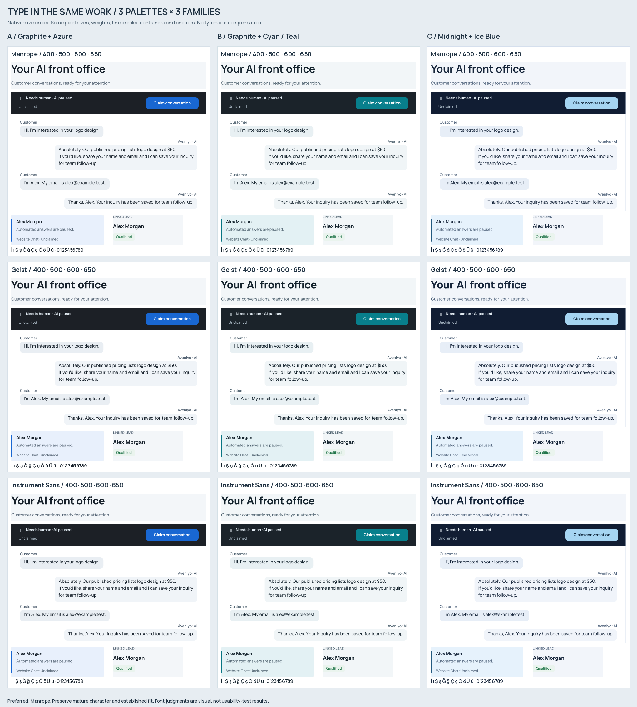

Avenlyo / Color reset
Approved Direction 3 architecture, refined density and radii. Three new cool color systems. Preferred: B, Graphite + Cyan / Teal, with Manrope. Design only; no production UI.
Recommendation, exact tokens and status semantics · Visual-direction documentation
Typography / same composition
All three palettes × Manrope, Geist and Instrument Sans. Native-size crops; same sizes, line breaks and container geometry.

Preferred B / complete system
Original studies and approved refinement artwork remain unchanged. Await stakeholder color approval before implementation.